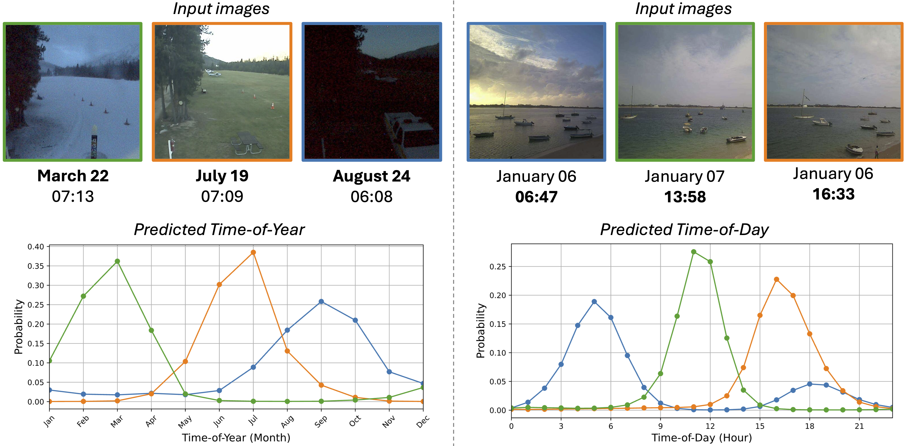
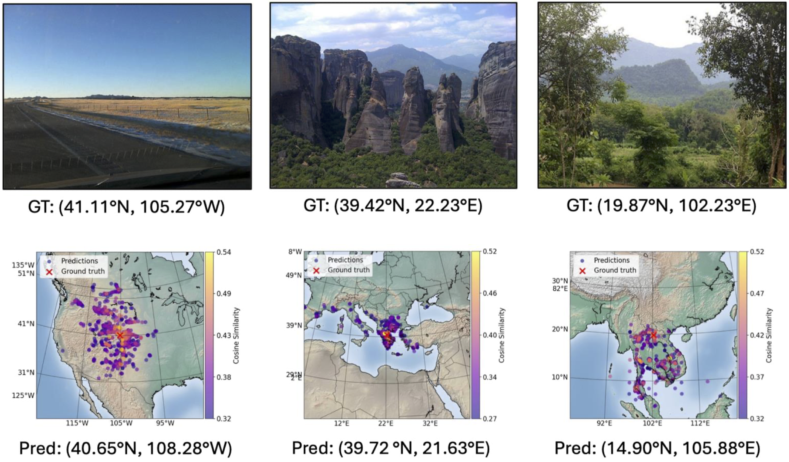

Main Results
TIGeR outperforms prior geo-temporal baselines across geo-time retrieval, time prediction, and geo-localization on both TIGeR-test-86k and CVT.
Geo-time Retrieval
37.51%
R@10 on TIGeR-test-86k
TIGeR reaches 37.51% R@10 on TIGeR-test-86k and 29.98% on CVT, delivering up to 14% higher geo-time retrieval recall than prior methods.
Time Prediction (ToY)
48.86 days
Best ToY error on TIGeR-test-86k with Il -> t
TIGeR reduces ToY error to 48.86 on TIGeR-test-86k and 47.00 on CVT, yielding up to 16% better time-of-year prediction.
Time Prediction (ToD)
3.06 hours
Best ToD error on TIGeR-test-86k with Il -> t
TIGeR lowers ToD error to 3.06 on TIGeR-test-86k and 2.35 on CVT, corresponding to up to 8% better time-of-day prediction.

Geo-time Aware Image Retrieval
Given a query image and target time, TIGeR retrieves an image from the same location at the requested time. It substantially improves recall on the new benchmark and remains strong on CVT.
| Dataset | R@1 | R@5 | R@10 |
|---|---|---|---|
| TIGeR-test-86k | 3.51 | 23.30 | 37.51 |
| CVT | 14.55 | 24.46 | 29.98 |
Time Prediction
TIGeR improves both time-of-year and time-of-day prediction, and using location as auxiliary context yields further gains.
| Query | Dataset | ToY | ToD |
|---|---|---|---|
I -> t |
TIGeR-test-86k | 51.49 | 3.13 |
I -> t |
CVT | 62.88 | 2.73 |
Il -> t |
TIGeR-test-86k | 48.86 | 3.06 |
Il -> t |
CVT | 47.00 | 2.35 |


Geo-localization Accuracy
TIGeR achieves the strongest localization accuracy on both datasets, with especially large gains on the new TIGeR benchmark.
| Query | Dataset | 200 km | 750 km |
|---|---|---|---|
I -> l |
TIGeR-test-86k | 48.63 | 65.61 |
I -> l |
CVT | 51.90 | 66.53 |
It -> l |
TIGeR-test-86k | 48.34 | 64.51 |
It -> l |
CVT | 53.40 | 67.15 |